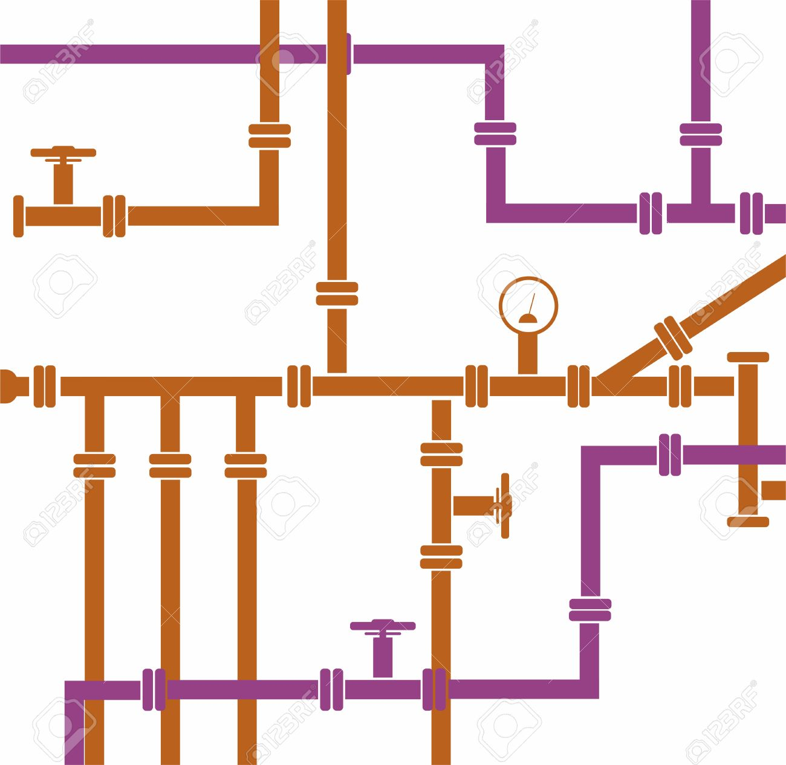

class: center, middle <img style="width: 20%;" src="./img/bionode.png"/> # [bionode-watermill][bionode-watermill] is a workflow engine for orchestrating **complex** and **dynamic** pipelines. The tool automatically **resolves input and output filenames**, while also maintaining a **directed acyclic graph (DAG) of task dependencies**. This enables the developer to **isolate individual tasks** and **compose** them with operators such as `join`, `junction`, and `fork`. Tasks can be **child processes** or **JavaScript functions**; of note is the ability to use **Node streams** which can be used to transform `STDIN` and `STDOUT`. Integration with Docker and clustering tools like `qsub` are some immediate objectives of the project. #### [@thejmazz][@thejmazz] [jmazz.me/pres/2016/10/24/bionode-watermill](https://jmazz.me/pres/2016/10/24/bionode-watermill) [bionode-watermill]: https://github.com/bionode/bionode-watermill [@thejmazz]: https://twitter.com/thejmazz --- # Agenda 1. Project history 1. What is a pipeline? 2. Example VCF Pipeline 1. What makes pipelines complex or dynamic? 1. Existing tools - bash, makefile, python scripts - [snakemake][snakemake] - [nextflow][nextflow] 1. bionode-watermill overall goals 1. Define a `task` 1. The task lifecycle 1. The DAG, input resolution, and operators 1. NGS Pipeline with watermill 1. Node streams 1. Node streams & child processes 1. Next Steps [snakemake]: https://bitbucket.org/snakemake/snakemake/wiki/Home [nextflow]: https://www.nextflow.io/ --- # Project History - Google Summer of Code: May-August 2016 - [Bionode workflow engine for streamed data analysis](https://summerofcode.withgoogle.com/projects/#6585953724399616) - 4 weeks "community bonding", 12 weeks coding - ended up spending first 4 weeks of code time *figuring out what to do*: my [NGS Workflows](https://jmazz.me/blog/NGS-Workflows) post - final 8 weeks to implement MVP of what was described in NGS Workflows post - Mentors: - Yannick Wurm, [wurmlab](https://wurmlab.github.io/). [@yannick__](https://twitter.com/yannick__) - Bruno Vieira, Phd student @ wurmlab, bionode founder. [@bmpvieira](http://twitter.com/bmpvieira) - Max Ogden, [dat](http://dat-data.com/), open data, Node. [@denormalize](https://twitter.com/denormalize) - Mathias Buus, dat, p2p, Node streams. [@mafintosh](https://twitter.com/mafintosh) --- # What is a pipeline? <div style="text-align: center;">  </div> --- <h2>What is a pipeline?</h2> - Takes a *source* to a *destination* - **source**: raw data generated by sequencing machines or otherwise - a file, set of files, or streaming output. (e.g. `fastq`) - **destination**: file(s) describing modeling/computational results (e.g. `vcf`) - transformation from one format to another accomplished with "tools" - **Tools** are usually written in C/C++, available as CLI binaries (maybe wrapped with Python/R) - Tools may: - read one or many files, either explicitly or implicitly - write one or many files, either explicitly or implicitly - consume streaming `STDIN` and/or produce streaming `STDOUT` - not give proper non-zero exit codes, change options across versions, log to `STDERR`, output empty files, etc... - **Pipeline**: series of transformations applied with **tools** to a **source** to produce a **destination** --- ## Example VCF Pipeline - **source**: reference genome (`reference.genomic.fna.gz`) and paired end genomic reads (`reads.sra`) - **destination**: variant calling format (SNPs) - `sample.vcf` - **tools**: sra-toolkit, bwa, samtools, bcftools, khmer, kmc, trimmomatic ```bash # Makes reads_1.fastq.gz and reads_2.fastq.gz fastq-dump --split-files --skip-technical --gzip reads.sra # Filtering 1: trimming with trimmomatic # Filtering 2: remove bad k-mers with khmer OR kmc # genome needs to be indexed before we can align to it bwa index reference.genomic.fna.gz # align to reference producing sequence alignment map, sam to bam, sort it bwa mem $ref $reads | samtools view -bh - | samtools sort - -o reads.bam samtools index reads.bam # makes reads.bam.bai # Call variants samtools mpileup -uf reference.genomic.fna reads.bam | \ bcftools call -c - > sample.vcf # samtools did not like reference.genomic.fna.gz zip format, so: bgzip -d reference.genomic.fna.gz # this deletes file!!! bgzip -d reference.genomic.fna.gz --stdout > reference.genomic.fna # this does not :) ``` --- ## What makes pipelines... ### Complex? - variable file formats - intermediary files - multiple runs with different species, etc. - files implicitly read and written - compatibility across tools - multiple tools to achieve the same transformation - multiple sets of options for the same tool ### Dynamic? - cannot describe in "pull" fashion - results of previous task can alter next step - run on local machine or cluster given resource availability --- ## Existing Tools - bash, makefile - unmaintainable, difficult to scale, no metrics - python scripts - essentially "in-house" pipelines, each task tightly coupled to pipeline - difficult to distribute atomic tasks - [snakemake][snakemake] - python + makefile syntax - "pull" style - [nextflow] - DSL using "processes" and "channels", groovy syntax - "push" style --- ## snakemake [full Snakefile here](https://github.com/bionode/gsoc16/blob/master/pipelines/with-snakemake/Snakefile) ```python species = { 'Salmonella-enterica': { 'readsID': '2492428', 'reference_url': 'http://ftp.ncbi.nlm.nih.gov/genomes/all/GCA_000988525.2_ASM98852v2/GCA_000988525.2_ASM98852v2_genomic.fna.gz' } } FINAL_FILES = [specie+'.vcf' for specie in species] rule all: input: FINAL_FILES rule download_sra: output: '{specie}.sra' run: readsID = species[wildcards.specie]['readsID'] shell(''' bionode-ncbi download sra {readsID}; cp {readsID}/*.sra {output} && rm -rf {readsID}; ''') rule call: input: '{specie}.sra' output: '{specie}.vcf' shell: 'magic {input} > {output}' ``` --- ## snakemake (cont.) - "pull" style - *final set of outputs must be described by `rule all`* - work backwards from final task to initial task - use wildcards to generalize filenames: useful for running pipelines over multiple species - here, `{specie}` will be replaced by whatever matches the regex - e.g., `specie` will be `salmonella-enterica` if there is a file named `salmonella-enterica.bam` ```python rule call: input: bam = '{specie}.bam', alignment_index = '{specie}.bam.bai', reference = '{specie}.genomic.fna' output: '{specie}.vcf' shell: 'samtools mpileup -uf {input.reference} {input.bam} | bcftools call -c - > {output}' ``` - due to the way wildcards are resolved, and the "pull" style, I was **not able to describe a pipeline using 2 alternate filtering tools** `khmer` and `kmc`: consider that `specie.khmer.fastq.gz` and `specie.kmc.fastq.gz` will both match to `{specie}.fastq.gz` - you can use custom regexes inside wildcards, but I was still stuck --- ## nextflow [full main.nf here](https://github.com/bionode/gsoc16/blob/master/pipelines/with-nextflow/main.nf) ```groovy // Describe task in "process" blocks process downloadSRA { container 'bionode/bionode-ncbi' input: val readsID from species.collect { it.value.readsID } output: file '**/*.sra' into reads """ bionode-ncbi download sra $readsID > tmp """ } // Communicate across processes using "channels" (queues) // Here each file matching `**/*.sra` is pushed into `reads` process extractSRA { container 'inutano/sra-toolkit' input: file read from reads output: file '*.fastq.gz' into samples """ fastq-dump --split-files --skip-technical --gzip $read """ } ``` --- ## nextflow (cont.) - ability to drop in Docker containers for each process is great - BUT channels are stored in memory (JVM) - so communicating across nf. processes between `stdout` and `stdin` fails - this means for processes that use more than one tool, you need to create a custom Dockefile that includes both (or use one container for the whole pipeline) - end up with containers like `bwa-samtools-bcftools`, or `everything-for-my-pipeline` - why is this suboptimal? - containers should be for one process, then we can maintain a repository of each tool at each version, easily drop them into our pipelines w/o manually combining subsets - **cannot maintain one and only one tool per container per task - less modularity, more manual container building** --- ## nextflow (cont.) - how about running both filtering tools? (`kmc` and `khmer`) - **end up maintaining tightly coupled, nearly duplicate code to handle channel suffixes** - don't need to bother with file names since every process ran in its own directory (snakemake runs everything in current directory) ```groovy process sortAlignment_kmc { input: file sam from readsUnsorted_kmc output: file 'reads.bam' into readsBAM_kmc """ samtools sort $sam -o reads.bam > reads.bam """ } // can duplicate channels to use them in more than one process readsBAM_kmc.into { readsBAM_kmc1; readsBAM_kmc2 } process sortAlignment_khmer { input: file sam from readsUnsorted_khmer output: file 'reads.bam' into readsBAM_khmer """ samtools sort $sam -o reads.bam > reads.bam """ } ``` --- ## bionode-watermill goals - improve **experimental and exploratory** nature of writing pipelines by - making it easier to replace tools at same step (e.g. `kmc`, `khmer`, another filtering tool) - making it easier to play with tool options - compare tools, and options within the same tool - could run pipeline with each step using alternate tools, with each tool using a set of different options, and compare final results across all these variables - different tools make different assumptions that may or may not be the best for your data! it is important to understand why! (don't just copy paste defaults and call it a day) - each tool can be dropped into any other pipeline, with zero "glue code" - tool specific patches can be maintained separately (e.g. `0` exit code but logs contain "error" so error out) - **reproducible** - minimize pipeline specific code and instead compose atomic tasks - ensure reproducibility through Docker (on the roadmap) - **scalable** - integrate with clustering programs like Sun Grid Engine (on the roadmap) --- ## Defining a task ES5: ```javascript const uppercase = task({ input: '*.lowercase', output: '*.uppercase' }, function(resolvedProps) { const input = resolvedProps.input return fs.createReadStream(input) .pipe(through function(chunk, enc, next) { next(null, chunk.toString().toUpperCase()) }) .pipe(fs.createWriteStream(input.replace(/lowercase$/, 'uppercase'))) }) ``` ES6: ```javascript const fastqDump = task({ input: '**/*.sra', output: [1, 2].map(n => `*_${n}.fastq.gz`), name: 'fastq-dump **/*.sra' }, ({ input }) => `fastq-dump --split-files --skip-technical --gzip ${input}` ) ``` --- ## The Task Lifecycle 1. Input [glob patterns](https://github.com/isaacs/node-glob) are resolved to absolute file paths (e.g. `*.bam` to `reads.bam`) 2. The **operation** is ran, passed resolved input, params, and other props 3. The operation completes. 4. Output glob patterns are resolved to absolute file paths. 5. Validators are ran over the output. Check for non-null files, can pass in custom validators. 6. Post-validations are ran. Add task and output to DAG. --- ## The DAG, input resolution, and operators - each *instance* of a task gets added to the DAG as one vertex - each vertex stores full file path for input/output, other metadata, etc. - there will be an edge between each adjacent (**join**ed) task - consider `A` and `B` are already defined tasks, each creating a file with the extension `a`, `b` - task `C` wants as input, `*.b` and `*.a` - when a task looks for input, it will check the outputs of vertices before it, so `C` will find `*.a` from the output of `A` ```javascript join(A, B, C) // A, B, C run in linear order ``` - **junction** will collect all outputs from parallel lineages: ```javascript join(junction(A, B), C) // A and B run in parallel, C has access to each of their outputs ``` - **fork** will duplicate all tasks past the fork for each instance the fork creates: ```javascript join(fork(A1, A2), B, C) // A1->B'->C' and A2->B''->C'' ``` --- ## NGS Pipeline with watermill [full pipeline here](https://github.com/bionode/bionode-watermill/blob/master/examples/variant-calling-filtered/pipeline.js) - `filterKMC` and `filterKHMER` have **identical input and output**. the instances of these tasks will be unique having fully resolved input and output, but this lets us describe tasks in an isolated manner, and as well permits `fork` to work - with atomic tasks already declared, we can then **separate task order from task declaration**, dropping tasks into our `join`, `junction`, and `fork` operators - describing the entire pipeline in just a few lines: ```javascript const pipeline = join( junction( join(getReference, bwaIndex), join(getSamples, fastqDump) ), trim, mergeTrimEnds, decompressReference, // only b/c mpileup did not like fna.gz join( fork(filterKMC, filterKHMER), alignAndSort, samtoolsIndex, mpileupAndCall // 2 instances each of these ) ) ``` --- ## Node [streams](https://nodejs.org/api/stream.html) - lazily produce or consume data in buffered chunks - Readable, Writable, Duplex (transform, passthrough) - control "highWaterMark", handle backpressure, **Buffers work around V8 heap memory limit** - store Buffer by default, can do String or Object streams as well - most core Node modules use streams already! ```javascript const http = require('http'), fs = require('fs') const through = require('through2') // npm install through2 http.createServer((req, res) => { const rs = fs.createReadStream('./alphabet.txt') const ts = through(function (chunk, enc, next) { // don't use => syntax (binds this and we lose stream methods) this.push(chunk.toString().toUpperCase()) // call push method from stream next() // call next with no error (could have been next(new Error('something messed up'))) }) // Send uppercase file to response rs.pipe(ts).pipe(res) }).listen(8080) ``` --- ## Node streams & [child_process](https://nodejs.org/api/child_process.html) - **play with child process STDIO** - fork `STDOUT` to more than other process - backup each stream in `A | B | C` - transform: `STDOUT | transform | STDIN` - **maintain one container per process, pass `STDIO` between tasks** - pass `STDIO` through networks, run analysis across hosts - watch `STDOUT`, `STDERR` for keywords, e.g. trigger error for "reference not found" (useful for cases where tool does not properly exit with non-zero exit code) ```javascript const { spawn } = require('child_process') // spawn(program, args, options). shell: true does sh -c "bwa mem ref.genomic.fna.gz reads.fastq.gq" const bwaMem = spawn('bwa', [ 'mem', ref, reads ], { shell: true }) const samtoolsView = spawn('samtools', [ 'view', '-bh', '-' ], { shell: true }) // Pass stdout from one process to stdin in another bwaMem.stdout.on('data', (data) => samtoolsView.stdin.write(data)) samtoolsView.stdout.pipe(fs.createWriteStream('./reads.sam')) ``` - see [ndjson-process-stream](https://github.com/thejmazz/ndjson-process-stream): pass newline delimited JSON into child process, child process returns computed ndjson, output Objects --- ## Next Steps - Integrate Docker (something like [go-dexec](https://github.com/ahmetalpbalkan/go-dexec) for `child_process`) - Integrate cluster tools like `qsub` (Sun Grid Engine) - better metrics (real time, cpu time, network time, etc.) - DAG visualization - Web/[Electron](http://electron.atom.io/) application (for example, to view plots as they are created) - **More examples pipelines!** - More accessible custom lifecycle hooks - e.g. custom file validators - integration with [Dat](http://dat-data.com/dat) (e.g., add files to dat after validation) - integrate with external storage (e.g. FTP, S3) - Organize a tasks submission guideline, so that `npm install watermill-bwa` is possible - ideally one would then import all their tasks and just write the orchestration code - **Grab more contributors! Excite more people and JavaScript about Node!** --- class: center, middle # Thanks!